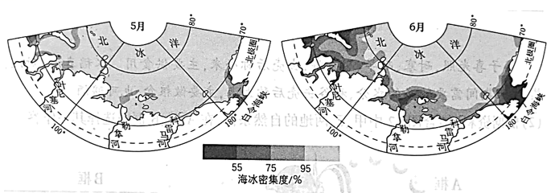

2023年北京中考地理 第20题 解析
20. 巴西伊瓜苏国家公园（ ）
A. 位于巴西的西南部B. 地处热带沙漠气候区
C. 内部被伊瓜苏河分割D. 内部城镇多、人口稠密
21. 重新关闭穿越国家公园的道路，可以（ ）
①保护动物的迁徙通道②促进巴西发展边境贸易
③减少盗伐与盗猎现象④改善动植物的生存环境
A ①②③B. ①②④C. ①③④D. ②③④
①②③B. ①②④C. ①③④D. ②③④
22. 为保护动植物资源，该国家公园应（ ）
A. 加强科学研究力度，改变植物生长习性B. 健全国际合作机制，畅通跨境生态廊道
C. 扩建周边所有城镇，限制动物活动范围D. 大力开发旅游项目，拓宽经济收入渠道
【答案】20. A 21. C 22. B
【解析】
【20题详解】
读图可知，巴西伊瓜苏国家公园位于巴西的西南部，地处热带草原气候区，伊瓜苏河位于伊瓜 苏国家公园的边缘，内部城镇少，人口稀疏。A正确，BCD错误，故选A。
【21题详解】
重新关闭穿越国家公园的道路，可以减少人为的干扰，①保护动物的迁徙通道、③减少盗伐与盗猎现象、④改善动植物的生存环境，①③④正确。重新关闭穿越国家公园的道路，不利于促进巴西发展边境贸易，②错误。故选C。
【22题详解】
为保护动植物资源，该国家公园应健全国际合作机制，畅通跨境生态廊道，B正确。加强科学研究力度，改变植物生长习性、扩建周边所有城镇，限制动物活动范围、大力开发旅游项目，拓宽经济收入渠道都会影响当地原始生态环境，加大对生态环境的破坏，不利于保护动植物资源，ACD错误。故选B。
【点睛】伊瓜苏国家公园处于玄武岩地带。跨越阿根廷和巴西国界，高80米，长度上延伸至2700米的世界上最壮观的瀑布之一伊瓜苏瀑布就位于这个地区的中心。瀑布产生的云雾滋润着葱翠植物的生长。许多小瀑布成片排开，层叠而下，激起巨大的水花。周围生长着200多种维管植物的亚热带雨林，许多稀有和濒危动植物物种在公园中得到保护，这里是南美洲有代表性的野生动物貘、大水獭、食蚁兽、吼猴、虎猫、美洲虎和大鳄鱼的快乐家园。
海冰是极地研究的重要内容。海冰密集度指海冰面积占海域总面积的比例。图为近30年北冰洋部分海域5月、6月平均海冰密集度分布图。读图，完成下面小题。
